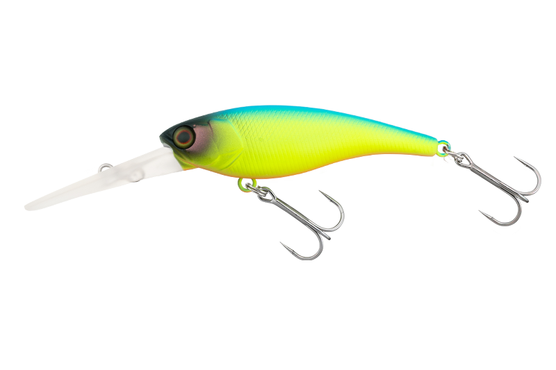
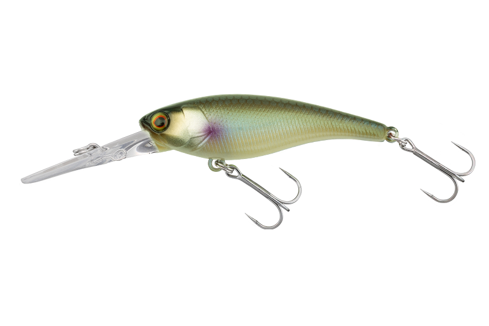
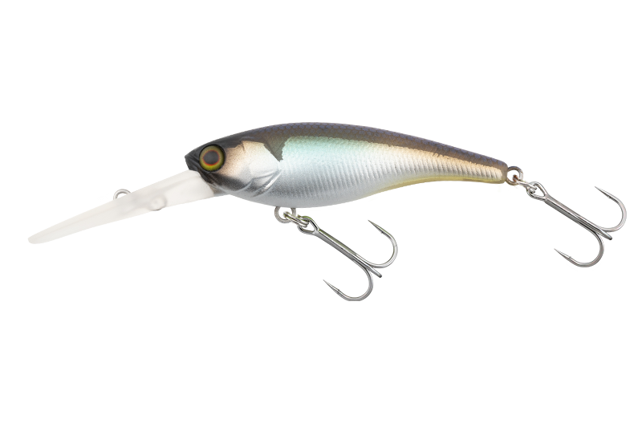
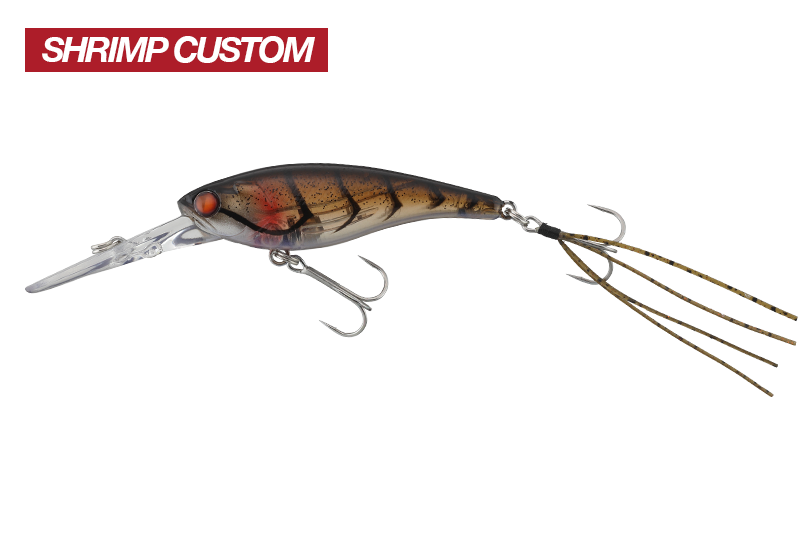

ソウルシャッド
（SOUL SHAD）
ソウルシャッド（SOUL SHAD）はJACKALL（ジャッカル）のシャッドです。
超高速から低速まで。抜群のバランスでバイトを誘発するマスターピース。主なターゲットはブラックバスです。
低速でも高速リトリーブでもバランスを崩さないボディバランスと直進安定性で、前傾の安定した姿勢からリアクションバイトを誘います。サイズごとに潜行深度が決められているので、幅広いレンジを攻略できます。

画像出典:JACKALL公式HP
スペック
- メーカー
- JACKALL（ジャッカル）
- タイプ
- サスペンド（68SFはスローフローティング）
- 代表サイズ（58SP）
- 58mm・5.5g・潜行深度 約1.5m
- フック
- がまかつ RB-M（58SPはトレブル#8）
- サイズ
- 45SP・52SP・58SR-SP・58SP・62DR-SP・62DDR-SP・68SP・68SF
- 搭載システム
- マグネット式移動重心
- 価格（58SP）
- 1,848円（税込）
▼今すぐチェック
ソウルシャッドの特徴
速く巻いても遅く巻いても崩れない、抜群の直進安定性
-
高い直進安定性
低速でも高速リトリーブでもバランスを崩さず、前傾の安定した姿勢でリアクションバイトを誘う。中層でのストップ＆ゴーやトゥイッチも有効。
-
マグネット式移動重心
キャスト時にテールまで移動した球が、巻き始めとともにフロントアイ付近へ移動し、磁力で固定されて低重心に。レスポンスよく動き出す。
-
全モデルがまかつRB-Mを標準搭載
全モデルにがまかつ社製のRB-Mを採用。箱から出した瞬間からベストセッティングで使える。
ソウルシャッドの使い方
基本はただ巻きです。潜行深度までしっかり潜らせてから、一定の速さで巻きます。
反応がない時は、中層でのストップ＆ゴーやトゥイッチを入れてみましょう。サスペンドなので、止めた時にその場で浮き沈みせずに見せられます。
ソウルシャッドの得意な状況
稚魚など小さな魚を偏食している時や、プレッシャーの高い状況で反射的なバイトを誘いたい時が得意です。
オリジナルの58SPはフィールドを選ばず使いやすく、いつでもタックルボックスの一軍として活躍するサイズです。
ワンポイント
エビを食べている時には、リアフックにエビの手足を模したラバーを付けた「SHRIMP CUSTOM」もあります。オリジナルよりタイトピッチなアクションです。
ソウルシャッドのサイズの使い分け
| モデル | 全長・重さ | 潜行深度・特徴 |
|---|---|---|
| 45SP | 45mm・2.7g | 約1.0m。稚魚など小魚を偏食している時に |
| 52SP | 52mm・4.0g | 約1.2m。45と58の中間のフィネススペック |
| 58SR-SP | 58mm・5.0g | 約1.0m。58SPのシャローモデル |
| 58SP | 58mm・5.5g | 約1.5m。ソウルシャッドのオリジナルモデル |
| 62DR-SP／62DDR-SP | 62mm・6.2g／6.8g | 約2.0m／約2.5m。ディープダイビングモデル |
| 68SP | 68mm・9.0g | 約1.8m。シリーズ最大でベイトタックルに合う |
※数値は公式ページより。68SF（スローフローティング・8.9g）もあります。
オススメカラー
ソウルシャッドはカラーが豊富です。そのうち4色を紹介します（画像は公式ページより）。

ブルーバックチャートまず1つ選ぶならこの色。濁りの日にも見やすい。

スイートパールフィッシュパール系の膨張色で、濁りの中でも存在感を出す。

ヌメリワカサギワカサギを食べている時に。

マーモシュリンプエビを食べている時に（SHRIMP CUSTOM）。
画像出典:JACKALL公式HP
ソウルシャッドに似ているルアー
-
 TNバイブレーション
ジャッカル
詳細はこちら＞
TNバイブレーション
ジャッカル
詳細はこちら＞
同じジャッカルのバス用バイブレーション。
-
 レゼルブ
DSTYLE
詳細はこちら＞
レゼルブ
DSTYLE
詳細はこちら＞
DSTYLEとジャッカルが共同開発した小型トップウォーター。
-
 ヴィローラ4インチ
DSTYLE
詳細はこちら＞
ヴィローラ4インチ
DSTYLE
詳細はこちら＞
中層スイミングやI字系に使えるリアル系ワーム。